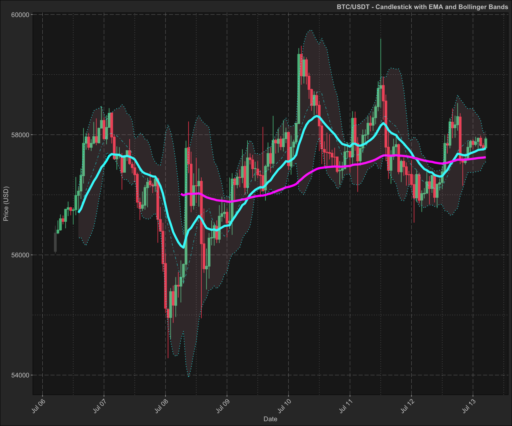

dmplot
R framework written in high-performance C++ and ggplot2 for financial and time series data analysis.
The package provides algorithms, functions, ggplot2 layers and most importantly a framework for working with and analysing financial and time series data.
Installation
You can install dmplot using:
# install.packages("remotes")
remotes::install_github("dereckmezquita/dmplot")Getting started
Get financial data
kucoin is a package for interacting with the kucoin api. You can use any source of financial data as long as you pass the variables to the ggplot2 stat correctly.
ticker <- "BTC/USDT"
data <- get_market_data(
symbols = ticker,
from = "2024-07-01 10:36:50 EST", # lubridate::now() - lubridate::days(7),
to = "2024-07-08 10:36:53 EST", # lubridate::now(),
frequency = "1 hour"
)
head(data)
#> symbol datetime open high low close volume
#> <char> <POSc> <num> <num> <num> <num> <num>
#> 1: BTC/USDT 2024-07-01 10:00:00 62942.7 62978.1 62779.0 62851.0 52.82884
#> 2: BTC/USDT 2024-07-01 11:00:00 62850.9 62862.5 62599.7 62663.7 81.03310
#> 3: BTC/USDT 2024-07-01 12:00:00 62663.8 62914.7 62643.8 62880.5 69.31822
#> 4: BTC/USDT 2024-07-01 13:00:00 62880.6 63084.0 62520.6 62687.4 125.46135
#> 5: BTC/USDT 2024-07-01 14:00:00 62687.5 62941.5 62605.0 62822.6 111.57547
#> 6: BTC/USDT 2024-07-01 15:00:00 62818.8 63147.5 62817.9 63126.9 79.18494
#> 1 variable(s) not shown: [turnover <num>]NOTE: a demo dataset is included in the demo/data/ directory.
Working with and plotting financial data
Here I demonstrate how to use the stats for plotting financial data along with the theme functions included in this package:
dmplot::stat_candlesticks()dmplot::stat_bollingerbands()dmplot::stat_movingaverages()dmplot::stat_macd()
And the theme functions for styling:
The dmplot framework provides a number of high-performance C++ implementations of technical indicators which can be used directly in the data.table := operator. This allows one to leverage the power of data.table and the speed of C++ for calculations.
-
dmplot::bb()- Bollinger Bands -
dmplot::ema()- Exponential Moving Average, with wilder argument -
dmplot::macd()- Moving Average Convergence Divergence -
dmplot::mom()- Momentum -
dmplot::monte_carlo()- Monte Carlo simulation -
dmplot::roc()- Rate of Change -
dmplot::rsi()- Relative Strength Index -
dmplot::sma()- Simple Moving Average
One can easily use external packages to calculate indicators as long as they return a list or can be coerced to a list.
The reason for this is that we want to impose the use of “Tidy Data” principles, as this is the convention that ggplot2 follows and would allow us to easily build our analyses and plots in layers.
For more information on working with dmplot see Getting started with the dmplot framework.
EMA and Bollinger Bands
Here we demonstrate how one might use an external package to calculate an indicator such as EMA (TTR). dmplot also provides a high-performance C++ implmentation of ema and bb which can be used directly in the data.table := operator.
box::use(TTR[ EMA ])
data2 <- dt$copy(data)
# wrap to return a list
ema <- function(x, n, wilder = TRUE) {
return(as.list(as.data.frame(EMA(x, n = n, wilder = wilder))))
}
# calculate the short and long moving averages
data2[, ema_short := ema(close, n = 10, wilder = TRUE)]
data2[, ema_long := ema(close, n = 50, wilder = TRUE)]
# use dmplot's C++ implementation of bollinger bands
data2[,
c("bb_lower", "bb_mavg", "bb_upper", "bb_pct") := dmplot$bb(close, n = 10, sd = 2)
]
tail(data2[, .(datetime, close, ema_short, ema_long, bb_lower, bb_mavg, bb_upper)])
#> datetime close ema_short ema_long bb_lower bb_mavg bb_upper
#> <POSc> <num> <num> <num> <num> <num> <num>
#> 1: 2024-07-08 05:00:00 55479.1 56208.32 57477.51 54344.97 55769.94 57194.91
#> 2: 2024-07-08 06:00:00 55629.8 56150.47 57440.56 54589.01 55606.22 56623.43
#> 3: 2024-07-08 07:00:00 55843.9 56119.81 57408.62 54726.81 55531.58 56336.35
#> 4: 2024-07-08 08:00:00 57773.6 56285.19 57415.92 54157.92 55669.65 57181.38
#> 5: 2024-07-08 09:00:00 57514.7 56408.14 57417.90 53958.81 55835.80 57712.79
#> 6: 2024-07-08 10:00:00 56817.6 56449.09 57405.89 54113.75 56006.43 57899.11Because of the dmplot framework we can build our analyses and plots in layers. First we create the candlestick plot and then add the EMA and Bollinger Bands in separate layers. This would allow us to dynamically overlay different indicators and analyses.
candle_plot <- data2 |>
ggplot2$ggplot(ggplot2$aes(
x = datetime,
open = open,
high = high,
low = low,
close = close
)) +
## ------------------------------------
dmplot$stat_candlestick() +
## ------------------------------------
ggplot2$scale_x_datetime(date_breaks = "1 day", date_labels = "%b %d") +
ggplot2$labs(
title = paste(ticker, "- Candlestick with EMA and Bollinger Bands"),
x = "Date",
y = "Price (USD)"
) +
dmplot$theme_dereck_dark() +
ggplot2$theme(axis.text.x = ggplot2$element_text(angle = 45, hjust = 1))
ema_layer <- dmplot$stat_movingaverages(data = data2,
ggplot2$aes(x = datetime, short = ema_short, long = ema_long),
alpha = list(mavg = 0.5),
colour = list("cyan", "magenta")
)
bb_layer <- dmplot$stat_bollingerbands(data = data2,
ggplot2$aes(ymin = bb_lower, mavg = bb_mavg, ymax = bb_upper),
colour = list("pink", "cyan", "cyan")
)
print(candle_plot + ema_layer + bb_layer)
MACD
Plotting the MACD (moving average convergence divergence) indicator:
data2 <- dt$copy(data)
data2[, c("macd", "macd_signal") := dmplot$macd(close, s = 12, l = 26, k = 9)]
data2[, macd_diff := macd - macd_signal]
tail(data2[, .(datetime, close, macd, macd_signal, macd_diff)])
#> datetime close macd macd_signal macd_diff
#> <POSc> <num> <num> <num> <num>
#> 1: 2024-07-08 05:00:00 55479.1 -0.9768488 -0.7276772 -0.24917161
#> 2: 2024-07-08 06:00:00 55629.8 -0.9398049 -0.7701027 -0.16970222
#> 3: 2024-07-08 07:00:00 55843.9 -0.8695678 -0.7899957 -0.07957204
#> 4: 2024-07-08 08:00:00 57773.6 -0.5298231 -0.7379612 0.20813814
#> 5: 2024-07-08 09:00:00 57514.7 -0.2950758 -0.6493841 0.35430831
#> 6: 2024-07-08 10:00:00 56817.6 -0.2066996 -0.5608472 0.35414763
macd_plot <- ggplot2$ggplot(data2, ggplot2$aes(x = datetime)) +
## ------------------------------------
dmplot$stat_macd(
ggplot2$aes(macd = macd, macd_signal = macd_signal, macd_diff = macd_diff)
) +
ggplot2$scale_x_datetime(
date_breaks = "12 hour", date_labels = "%Y-%m-%d %H:%M"
) +
ggplot2$scale_y_continuous(n.breaks = 15) +
ggplot2$labs(
title = paste(ticker, "- MACD"),
x = "Date",
y = "MACD Value"
) +
dmplot$theme_dereck_dark() +
ggplot2$theme(
axis.text.x = ggplot2$element_text(angle = 45, hjust = 1),
panel.grid.minor = ggplot2::element_blank()
)
print(macd_plot)
Now let’s do the same plot in a light theme:
macd_plot +
dmplot$theme_dereck_light() +
ggplot2$theme(
axis.text.x = ggplot2$element_text(angle = 45, hjust = 1),
panel.grid.minor = ggplot2::element_blank()
)
Benchmarking dmplot’s high-performance C++ technical indicators
Here we do a simple demonstration and benchmark of dmplot’s Bolinger Bands implementation vs the TTR package. Note that despite using a version not wrapped to return a list the TTR implementation is still significantly slower than dmplot’s C++ implementation.
box::use(microbenchmark[ microbenchmark ])
box::use(TTR[ BBands ])
ttr_bb_wrapped <- function(close, n = 2, sd = 2) {
return(as.list(as.data.frame(BBands(close, n = n, sd = sd))))
}
benchmark_reps <- 10L
time_interval <- 5L
standard_dev <- 2L
single_micro <- microbenchmark(
ttr_bb_naked = BBands(data$close, n = time_interval, sd = standard_dev),
ttr_bb_wrapped = ttr_bb_wrapped(data$close, n = time_interval, sd = standard_dev),
dmplot_bb = dmplot$bb(data$close, n = time_interval, sd = standard_dev),
times = benchmark_reps
)
ggplot2$autoplot(single_micro) +
dmplot$theme_dereck_dark() +
ggplot2$geom_violin(ggplot2$aes(fill = expr), linewidth = 0.25) +
ggplot2$scale_fill_manual(
values = c("ttr_bb_naked" = "red", "ttr_bb_wrapped" = "red", "dmplot_bb" = "green")
) +
ggplot2$labs(
title = "dmpplot vs TTR BBands"
) +
ggplot2$theme(legend.position = "none")